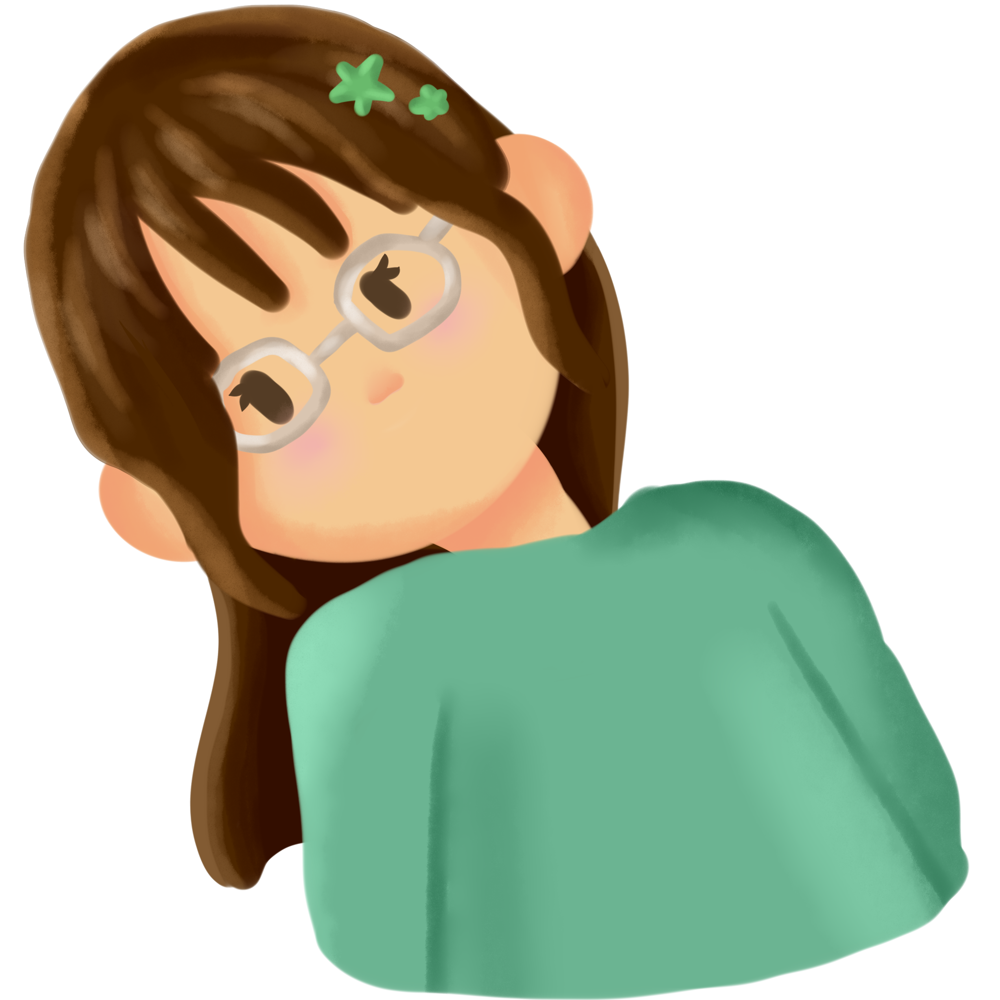

Quién soy yo
¡Hola! mi nombre es Marycarmen Ramirez.
Tengo 21 años y estudio Diseño Gráfico. Nací y crecí en un municipio llamado Acatlán de Osorio en el estado de Puebla, México.
Me considero una persona muy tranquila, creativa y entusiasta, centrada en mis estudios, en mi familia, en divertirme y ser feliz.
Mi familia
Siempre he sido una persona muy cercana a mi familia, me gusta mucho pasar tiempo con ellos y puedo sin dudarlo cancelar otros planes para estar con mis hermanos.
Mi familia está conformada por 4 integrantes: Mi mamá, Gaby; mi hermana mayor Damaris; mi hermano mayor Alfredo y yo, la menor. Crecí siendo criada por mis hermanos mayores, por eso me cuesta estar lejos de ellos y debido a nuestra gran diferencia de edad, cuando aún era pequeña ellos tuvieron que irse a trabajar a Puebla y yo me sentí sola por años, por eso, ahora que puedo estar con ellos no desaprovecho ninguna oportunidad.
Soliamos tener muchos gatitos cuando yo era niña, no eran realmente de nosotros pero los alimentabamos, aunque como siempre nos hemos mudado de casa constantemente, fuimos alejandonos de ellos.
Mudarme de casa es algo a lo que estoy acostumbrada, nos hemos mudado 7 veces en los últimos 20 años. En la casa actual en la que "vivimos" hemos durado 6 años, en las anteriores 3 años era lo máximo. Pero como ahora mis hermanos y yo estamos en Puebla, mi mamá decidió no moverse por un tiempo.
Mis hobbies
Kdramas
Mi hermana solía escuchar k-pop y ver k-dramas. Como hermana menor obviamente tenia que ser influenciada, así que desde los 10 años empecé a ver k-dramas también. Siendo uno de los pocos hobbies que conservo aún 11 años después.
Me gusta mucho poder verlos, en especial sola, me transmiten tantas emociones y experiencias, es tan divertido poder vivir miles de historias diferentes a través de una pantalla, especialmente los de romance, soy una total fan del romance, en especial de los Slow burn y de los Hate to love.
Limpieza
Me siento feliz cuando estoy en un ambiente limpio y ordenado. Cuando hago limpieza extrema es como si se me reiniciara la vida, lo hago cuando estoy enojada o triste, me ayuda a pensar y calmarme. También lo hago cuando estoy evitando otra tarea, procratinación.
Mi sueño en la vida es poder tener una casa bonita, con muebles y utensilios bonitos y siempre limpia y ordenada, sin ruido visual.
Decorar
Originalmente pondría "dibujar" pero es un pasatiempo que he perdido a lo largo de mi carrera profesional a pesar de que lo practico constantemente en mis trabajos, no es algo que disfrute tanto actualmente.
Decorar ahora me genera esa sensación de bienestar y a la vez me emociona. Me gusta llevar journals, distintas libretitas en donde puedo escribir de lo que quiera. Una que uso como diario, otra donde escribo sobre k-dramas y cómics que me gustan, y una que uso como agenda para mi vida universitaria, todas ellas decoradas con stickers, plumones y boletos o envolturas que me recuerden a algún momento importante.